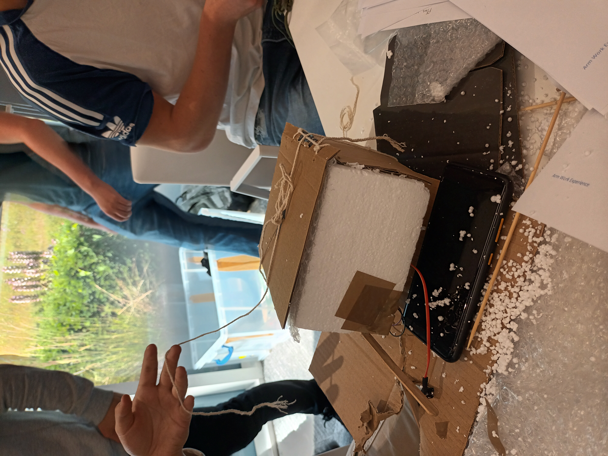

Mission 1
Our team diligently engineered a robust structure that perfectly met the predefined success criteria, taking into account crucial factors such as durability, parachute mounting, and programming requirements. To ensure optimal protection for the delicate components, we ingeniously crafted a sturdy structure using lightweight yet resilient styrofoam materials.
Moreover, we meticulously devised a specially designed mount to securely attach the parachute, allowing for a controlled and safe descent. In order to gather precise data during the drop tests, we employed an advanced accelerometer to accurately measure the velocity at various stages.
We then meticulously documented and analyzed the gathered data by utilizing the versatile features of Excel, enabling us to create comprehensive and informative graphs that visually represented the results.
Aligning our brand identity with our dedicated mascot, Jimmy the Elephant, we took inspiration from our fearless pilot to create a distinctive and memorable logo. We chose an elephant to represent humanity’s perseverance and to never forget those who came before us. Reflecting our team's spirit and determination, we collectively chose the empowering team name "Jimmy Tron" as a testament to our shared vision and commitment to excellence.